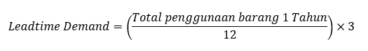
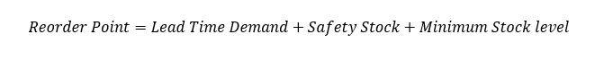

<div id="portfolio-page" class="portfolio-page-content">
    <div class="portfolio-page-wrapper">
        <div class="portfolio-page-nav">
            <div class="nav-item portfolio-page-prev-next">
                <a class="ajax-page-load" href="portfolio-project-2.html"><i class="lnr lnr-chevron-left"></i></a>
                <a class="ajax-page-load" href="portfolio-project-1.html"><i class="lnr lnr-chevron-right"></i></a>
            </div>
            <div class="nav-item portfolio-page-close-button">
                <a id="portfolio-page-close-button" href="#"><i class="lnr lnr-cross"></i></a>
            </div>
        </div>

        <div class="portfolio-page-title">
            <h1>Optimalisasi Stok Material <i>Fast Moving</i> | PT Pertamina RU-VI Balongan</h1>
        </div>

        <div class="row">
            <div class="col-sm-8 col-md-8 portfolio-block">
                <div class="owl-carousel portfolio-page-carousel">
                    <div class="item">
                        
                    </div>
                    <div class="item">
                        
                    </div>
                    <div class="item">
                        
                    </div>
                </div>

                <div>
                    <p class="deskripsi-tambahan">
                        Saya memiliki pengalaman magang di perusahaan minyak dan gas PT Pertamina RU-VI Balongan. Selama periode magang selama 1 hingga 2 bulan, saya ditempatkan di divisi <i>Procurement</i>. Divisi <i>procurement</i> terdiri dari bidang yaitu <i>Inventory Control, Warehousing, Purchasing</i>, dan pengadaan jasa. pada kesempatan magang kali ini, saya berfokus pada tiga bidang utama, yaitu <b><i>inventory control, warehousing, dan purchasing</i></b>.
                    </p>

                    <p class="deskripsi-tambahan">
                        Berikut merupakan pekerjaan yang saya lakukan di setiap bidang:
                        <ul>
                            <li class="deskripsi-tambahan">
                                Pada <b>Bidang <i>Inventory Control</i></b>, saya mempelajari penggunaan <i>software</i> SAP untuk menganalisis kebutuhan <i>user</i> dan <b>menyusun <i>purchase order</i></b> berdasarkan data permintaan. Pada divisi ini, saya diberikan tanggung jawab untuk membuat <i>purchase order</i> untuk barang rutin dan <i>fast moving</i>. Dalam prosesnya, saya menerapkan <b>metode EOQ</b> (<i>Economic Order Quantity</i>) guna menentukan jumlah pemesanan yang optimal. Hasilnya, saya berhasil berkontribusi dalam menghemat pengeluaran perusahaan hingga sebesar <b>Rp 12 juta</b> dari pemesanan barang berlebih.
                            </li>

                            <li class="deskripsi-tambahan">
                                Pada <b>Bidang <i>Warehousing</i></b>, saya mempelajari standar operasional terkait proses <b>penerimaan barang dari setiap vendor</b>, termasuk pengecekan spesifikasi dan verifikasi barang sebelum diterima. Selain itu, saya juga mempelajari prosedur standar untuk penyaluran barang yang dibutuhkan oleh <i>user</i> secara mendadak.
                            </li>

                            <li class="deskripsi-tambahan">
                                Pada <b>Bidang <i>Purchasing</i></b>, saya mempelajari proses lanjutan dari pembuatan <i>purchase order</i> yang sebelumnya disusun oleh divisi <i>Inventory Control</i>, yaitu dengan membuat <i>purchase requisition</i>. Selanjutnya, saya mempelajari prosedur dalam menentukan apakah proses pengadaan akan dilakukan melalui mekanisme <i>open tender</i> atau dengan langsung memilih perusahaan rekanan yang sesuai.
                            </li>
                        </ul>
                    </p>
                    <p class="deskripsi-tambahan">
                        Saya memiliki keunggulan dalam analisis kebutuhan material, perencanaan pengadaan, serta pengendalian stok secara efisien. Pengalaman saya di bidang <b>Inventory Control</b>, <b>Warehousing</b>, dan <b>Purchasing</b> membentuk kemampuan saya dalam menerapkan metode perhitungan seperti <b>EOQ</b> untuk efisiensi biaya, memahami alur standar operasional penerimaan dan distribusi barang, hingga mengambil keputusan strategis dalam proses pengadaan. Dengan kombinasi ketelitian, analitis, dan pemahaman sistem <b>SAP</b>, saya terbiasa bekerja sesuai prosedur dan berorientasi pada efisiensi serta efektivitas operasional.
                    </p>
                </div>

                <script type="text/javascript">
                    jQuery(document).ready(function($){
                        $('.portfolio-page-carousel').imagesLoaded(function(){
                            $('.portfolio-page-carousel').owlCarousel({
                                smartSpeed:1200,
                                items: 1,
                                loop: true,
                                dots: true,
                                nav: true,
                                navText: false,
                                margin: 10,
                                autoHeight:true
                            });
                        });
                    });
                </script>
            </div>

            <div class="col-sm-4 col-md-4 portfolio-block">
                <!-- Project Description -->
                <div class="project-description">
                    <div class="block-title">
                        <h3>Description</h3>
                    </div>
                    <ul class="project-general-info">
                        <li><p><i class="lnr lnr-user"></i>Nurlintang Asriono Sudarmawan</p></li>
                        <li><p><i class="lnr lnr-link"></i> <a href="#" target="_blank"></a></p></li>
                        <li><p><i class="lnr lnr-calendar-full"></i> 1 Februari, 2024</p></li>
                    </ul>

                    <p class="text-justify">Analisis kontrol penyimpanan dan pengadaan pada barang berklasifikasi fast moving PT Pertamina RU-VI Balongan.</p>
                    <!-- /Project Description -->

                    <!-- Technology -->
                    <div class="tags-block">
                        <div class="block-title">
                            <h3>Technology</h3>
                        </div>
                        <ul class="tags">
                            <li><a>Word</a></li>
                            <li><a>Excel</a></li>
                            <li><a>SAP</a></li>
                        </ul>
                    </div>
                    <!-- /Technology -->

                    <!-- Skill -->
                    <div class="tags-block">
                        <div class="block-title">
                            <h3>Skill</h3>
                        </div>
                        <ul class="tags">
                            <li><a>Analytical Thinking</a></li>
                            <li><a>Problem Solving</a></li>
                            <li><a>Attention to Detail</a></li>
                            <li><a>Decision Making</a></li>
                            <li><a>Time Management</a></li>
                        </ul>
                    </div>
                    <!-- /skill -->
                </div>
                <!-- Project Description -->
            </div>
        </div>
    </div>
</div>
